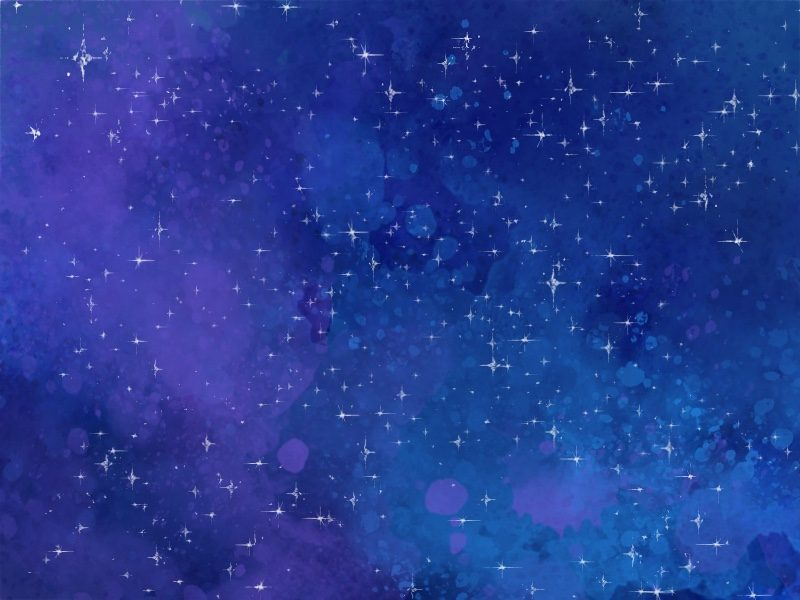

燃え尽き症候群から始まった
生きる燃え尽き症候群になったのは小学6年生の時だった。
塾、ピアノ、英語教室。週5習い事だった。
いわゆる優等生。
辛かったのは家族の不仲だった。
中学生になった姉が環境の変化に馴染めず、父親と喧嘩するようになり、両親も不仲に。姉と喧嘩、親からの期待、不安定な家庭。父は父で病んでいたし、母は稼ぐために働いていた。よくある機能不全家族なんだと思う。
体育授業で、味方が投げたボールを顔面に受け、「もう嫌だ。疲れた。」と思った。
体育館の外に転がっていったボールを探しに行くふりをして泣いた。涙を拭いてから「ごめんごめん、ボールあった」と戻った。
気持ちはボロクソだった。
中学に上がると不登校になった。もう頑張れない。
それでも真面目だったからスクールカウンセラーさんの教室に行った。
テストは受けた。
中3からメンタルクリニックに通い始める。親に黙って友達と行った。
混合性不安抑うつ障害。気分変調症。うつ病。統合失調症。名前はいろいろついたけどどうでもいい。
通信制の高校に通ってからも不調は続いた。
高校2年生、ついに閉鎖病棟へ入院。
家にいたくない。頑張りたくない。希死念慮、焦燥感、強迫観念、希死念慮。
電気ショック療法？をしたけれど治ったわけでもなく病院にいても辛いままだったので退院。
高校は一年遅れで卒業した。
理解してくれる人と結婚して数年かけて薬をやめた。調子は良くなった。子供を授かり、出産。産後うつ。一年間危なかったが、卒乳と共に持ち直す。
生理のたびに希死念慮に襲われて、PMDDを疑い産婦人科へ。症状が重いので精神科へと言われる。
双極性障害2型と診断。
気分が良くなって80万使い込む。かと思えば鬱になり希死念慮と焦燥感に襲われて寝たきりになったり家を飛び出して彷徨ったり。
それも薬である程度落ち着いてきた。
この先はどうしていけばいいんだろう。
どうなりたいか？
薬を飲んでいてもいい。生活が出来ればいい。でも不安定になると辛い。鬱も躁も辛い。周りにも迷惑をかけている。
自分らしさって何だろう？躁鬱も自分らしさ？それとも病気なだけ？
せめてコントロールができればいいのに。